Voici comment j'ai construit ma propre équipe de trading et de recherche en utilisant des GrokBots. Et non, ce n'est pas du putaclic. Je vais vous montrer les agents exacts, étape par étape, dans un instant. Donc dans cette vidéo, vous saurez ce que Grok et GrokBot sont réellement, et ce qui les différencie des outils d'IA que vous utilisez déjà, comment l'installer sur votre propre appareil en seulement quelques minutes, comment il se positionne réellement par rapport à la concurrence, en plus de la ventilation des coûts réels entre tous ces outils.
Interface & Outils : Application de chat type interface d'assistant IA (Market Scanner / ChatGPT / Cursor).
Contenu textuel & Code : Prompt détaillé pour un assistant de briefing matinal crypto (suivi Bitcoin/Ethereum, événements de liquidité, alertes de watchlist).
Action / Démonstration : Présentation de la configuration des agents IA et des prompts de Market Scanner pour le trading automatisé.
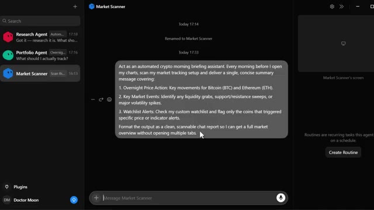
🔍 Agrandiret ensuite je vais vous présenter en détail l'équipe de recherche réelle que j'ai construite et qui gère mon propre trading de cryptomonnaies 24 heures sur 24 et 7 jours sur 7 sans que je ne lève le petit doigt. Maintenant, ce n'est pas spécifiquement exclusif aux cryptos, donc même si vous tradez des actions, du forex, des contrats à terme ou n'importe quel marché auquel vous pouvez penser, GrokBot vous aidera certainement et rendra vos recherches de trading beaucoup plus faciles. À la fin de cette vidéo, vous verrez exactement pourquoi je pense que c'est l'un des outils les plus puissants sortis cette année, car il élimine pour ainsi dire toute la friction qui a empêché les traders réguliers, des gens comme vous et moi, de mener à bien leurs
Interface & Outils : Interface de l'application Grok Bot / Market Scanner avec panneaux de configuration et marketplace de plugins.
Contenu textuel & Code : Instructions textuelles de configuration pour un scanner technique automatisé (Market Scanner) avec routines programmées (Intraday TA scanner, Morning market scan) et liste de plugins disponibles (Intercom, Amplitude, Apify, Antimetal, Astronomer, Mobbin).
Action / Démonstration : Navigation dans l'interface de l'agent de trading, configuration des routines de scan de marché automatisé et exploration de la marketplace de plugins.
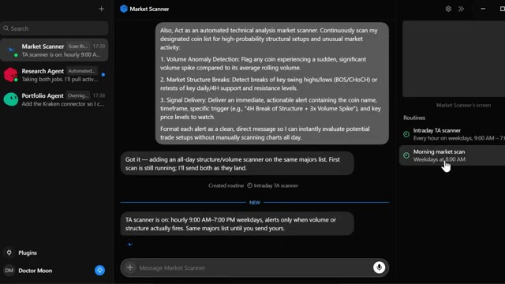
🔍 Agrandir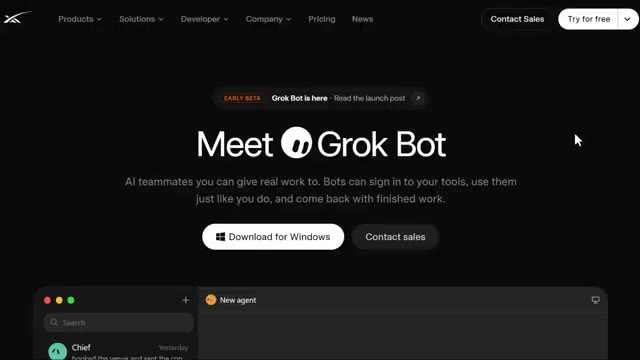
🔍 Agrandir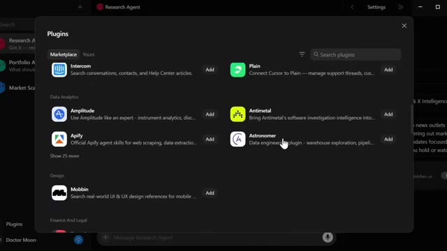
🔍 Agrandirpropre installation de recherche toujours active. Aucun codage, aucune expérience en développement requise. Alors, sans plus attendre, plongeons-nous dedans. Maintenant, avant d'aborder le bot lui-même, parlons de l'origine de tout cela. Parce que beaucoup d'entre vous connaissent le nom de Grok, mais ne connaissent pas vraiment son histoire. Grok a été créé par xAI, qu'Elon Musk a fondé en 2023 avec essentiellement un seul objectif : construire une IA capable de rivaliser avec OpenAI et de véritablement comprendre le monde, et pas seulement de répondre à des questions. La première version, Grok 1, est sortie en novembre 2023 et a été intégrée
Interface & Outils : Navigateur web affichant une page d'actualités et le site officiel de xAI.
Contenu textuel & Code : Texte de présentation de xAI sur Grok (« Why we are building Grok », assistant de recherche et autonomisation).
Action / Démonstration : Navigation et défilement sur la page web présentant l'origine et les objectifs de Grok.
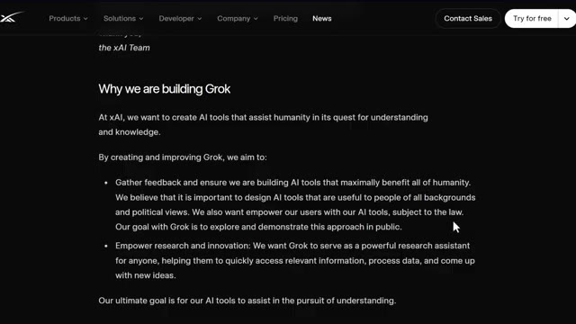
🔍 Agrandirdirectement dans X. Donc, si vous aviez X Premium, vous y aviez déjà accès sans même vous rendre compte de ce que vous utilisiez. À partir de là, ça a évolué vite. Grok 2, puis Grok 3, puis Grok 4, chacun comblant l'écart avec GPT et Claude. Et honnêtement, dès Grok 3, les gens ont arrêté de l'appeler l'IA de Twitter et ont commencé à le prendre au sérieux en tant que véritable modèle de pointe.
Interface & Outils : Interface de la plateforme X (Twitter) et site web d'information xAI / Grok.
Contenu textuel & Code : Menus de navigation X (Home, Explore, Notifications, Grok, Premium) et texte de présentation de Grok 4 (modèle d'IA, intégration de recherche en temps réel, abonnements SuperGrok et Premium+).
Action / Démonstration : Navigation sur l'interface de l'outil Grok intégré à X et consultation de la page d'actualités sur le lancement de Grok 4.
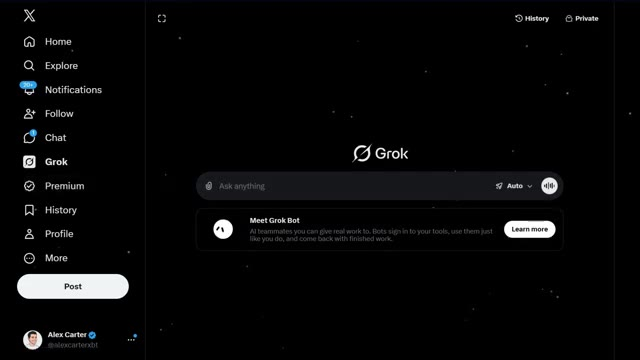
🔍 Agrandir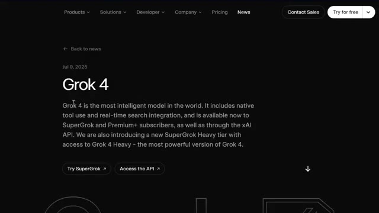
🔍 AgrandirEt maintenant, plus récemment encore, ils ont sorti Grok 4.6, dont je parlerai plus tard parce que ça compte vraiment pour la tarification. Mais voici la partie que la plupart des gens ratent. Grok a cessé d'être juste un chatbot il y a un moment déjà. xAI a pris ce même modèle et a construit un framework d'agents autour. C'est de ça qu'on est vraiment là pour parler aujourd'hui.
Interface & Outils : Navigateur web affichant le site de xAI/X et l'interface utilisateur de Grok.
Contenu textuel & Code : Texte d'annonce officiel de "Grok 4.6" et interface de discussion de Grok sur la plateforme X.
Action / Démonstration : Présentation des nouveautés et de l'évolution de Grok vers de nouveaux cas d'usage par xAI.
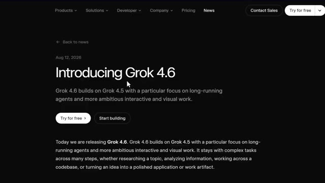
🔍 Agrandir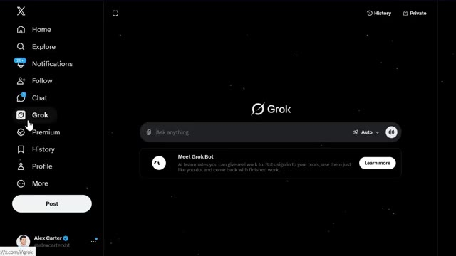
🔍 AgrandirVoici donc GrokBot, et honnêtement, l'appeler simplement un outil d'intelligence artificielle ne lui rend même pas justice. C'est fondamentalement une équipe complète d'agents qui ne pointent jamais, n'ont jamais besoin de rappels, et continuent simplement de bosser en arrière-plan 24 heures sur 24, 7 jours sur 7. Vous n'avez pas besoin d'un serveur privé virtuel qui tourne en continu. Vous n'avez pas besoin de configurer des fichiers mémoire pendant des heures.
Interface & Outils : Interface web de gestion d'agents IA (Grok Bot).
Contenu textuel & Code : Liste d'agents spécialisés (Inbox Manager, Account Manager, Talent Scout, Expense Manager) et descriptions textuelles de leurs tâches automatisées fonctionnant 24/7.
Action / Démonstration : Navigation et présentation visuelle de l'écosystème d'agents multiples en arrière-plan.
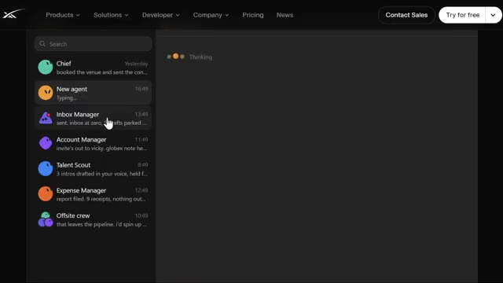
🔍 Agrandir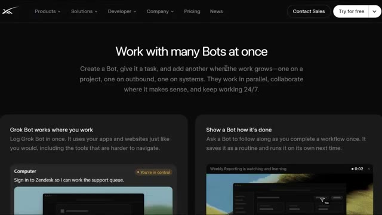
🔍 AgrandirVous le téléchargez, vous vous connectez à un compte, et vous avez déjà une équipe d'agents prêts à travailler. Si vous vous êtes déjà senti dépassé en essayant de configurer un système d'IA toujours actif pour votre trading, vous n'êtes pas seul. Et ce n'est pas votre faute. La plupart de ces outils ont bien trop de frictions. Il peut se connecter à pratiquement n'importe quel modèle, Grok, Opus, GPT, Gemini, tout ce que vous voulez faire tourner en arrière-plan.
Interface & Outils : Interface logicielle de configuration, plateforme d'échange WEEX, et documentation de dépôt de code.
Contenu textuel & Code : Plugins Marketplace, paramètres de création d'API (Spot, Futures, adresse IP), et fonctions de contrôle de graphiques (chart_set_symbol, chart_set_timeframe).
Action / Démonstration : Navigation dans les plugins, configuration des clés d'accès API pour un bot de trading, et consultation de la documentation technique.
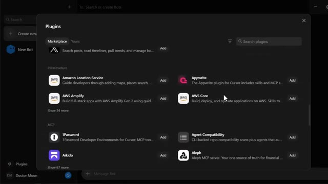
🔍 Agrandir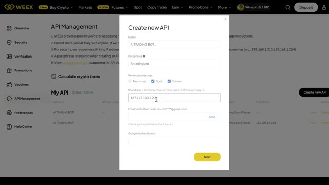
🔍 Agrandir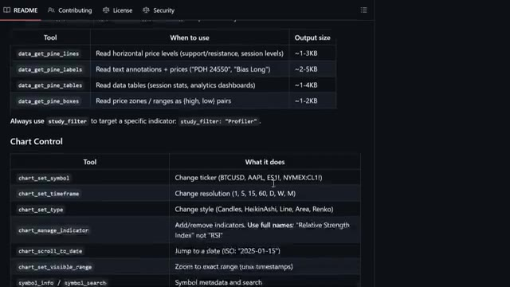
🔍 AgrandirEt comme il a son propre ordinateur, il peut parcourir des graphiques, extraire des données, exécuter des scripts et continuer à travailler pendant que vous dormez littéralement ou que vous regardez une autre vidéo sur cette chaîne. Maintenant, la plupart d'entre vous paient déjà pour ChatGPT, Gemini ou Claude. Soyons donc réalistes sur la raison pour laquelle c'est différent. ChatGPT reste probablement le meilleur assistant conversationnel polyvalent du marché.
Interface & Outils : TradingView, Pine Editor, interface de chat d'un agent de trading automatisé, et interface Claude AI.
Contenu textuel & Code : Code source en Pine Script (stratégie MACD, conditions d'alerte, signaux long/short) et instructions textuelles pour un agent de market scanner (détection de volume, structures de marché BOS/ChoCh).
Action / Démonstration : Présentation d'un script de trading automatisé et configuration d'un agent d'analyse technique de marché.
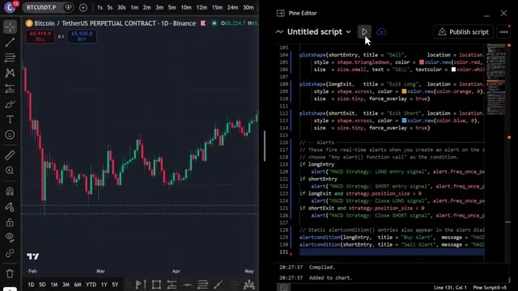
🔍 Agrandir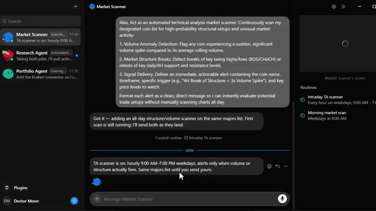
🔍 Agrandir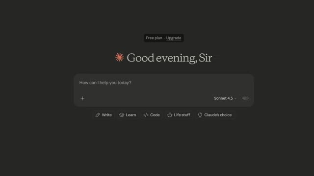
🔍 AgrandirParfait pour des questions rapides, expliquer une installation, rédiger quelque chose rapidement. Mais dès que vous voulez qu'il vérifie des prix pendant la nuit, qu'il analyse votre liste de surveillance pendant que vous dormez, tout s'effondre. Parce que ce n'est pas un agent, c'est une conversation. Il répond quand vous demandez. Il ne travaille pas quand vous ne le faites pas. Gemini s'en sort vraiment très bien pour tout ce qui est basé sur la recherche.
Interface & Outils : TradingView, Binance (graphique de prix), ChatGPT (interface web).
Contenu textuel & Code : Graphique de prix Bitcoin (BTC/USDT) en timeframe court avec volumes et oscillateur MACD ; interface ChatGPT présentant une analyse textuelle et des estimations de prix (Range : $90K - $180K, Base case : $120K - $140K).
Action / Démonstration : Visualisation d'un graphique technique et d'une interface d'intelligence artificielle pour illustrer la discussion sur les capacités d'analyse de marché.
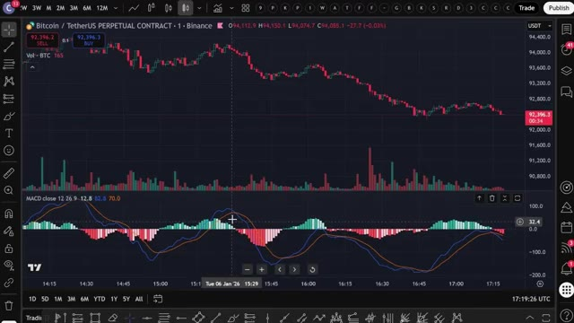
🔍 AgrandirRécupération de données en direct, recoupement d'actualités. Mais même problème. Pas d'ordinateur persistant, pas de mémoire qui fait avancer une tâche de manière autonome. Dès que vous fermez l'onglet, le travail s'arrête. Claude, en particulier Opus, est généralement le modèle de raisonnement le plus fort des trois, à mon avis. Et voici le point.
Interface & Outils : Navigateur web affichant les plateformes X (Twitter), Google Gemini et le site d'Anthropic (Claude Opus).
Contenu textuel & Code : Page de présentation du modèle d'IA Claude Opus par Anthropic avec description de ses capacités de raisonnement hybride et de fenêtre de contexte.
Action / Démonstration : Navigation web et présentation visuelle des interfaces et annonces de modèles d'IA par le présentateur.
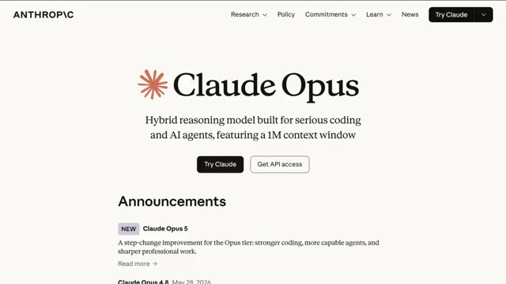
🔍 AgrandirGrokBot peut en fait faire tourner Opus en dessous. Ce n'est donc pas vraiment GrokBot contre Claude. C'est l'intelligence de Claude, moins les jours de configuration manuelle qu'il faut normalement pour connecter soi-même l'utilisation de l'ordinateur, les fichiers de mémoire et les connexions MCP. Vous pensez peut-être que votre configuration actuelle d'IA vous offre déjà une analyse solide.
Interface & Outils : Interface du réseau social X, terminal de commande SSH/Linux, et documentation de dépôt GitHub.
Contenu textuel & Code : Publication sur X avec logs de curseur, lignes de commandes Linux (`adduser`, `ufw enable`), et tableau de référence d'outils MCP (`chart_get_state`, `quote_get`).
Action / Démonstration : Navigation sur les réseaux sociaux, configuration système d'un serveur distant, et consultation de documentation technique d'outils MCP.
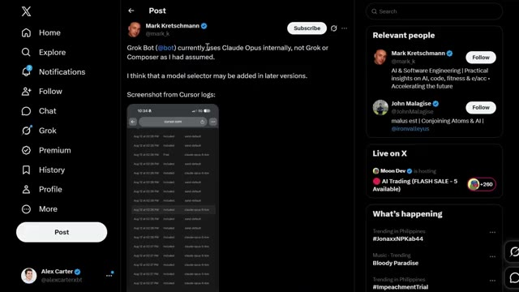
🔍 Agrandir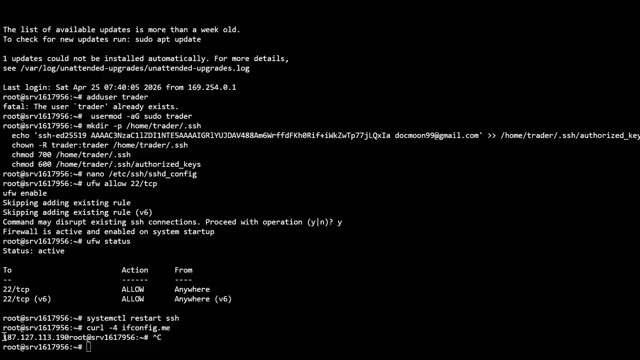
🔍 Agrandir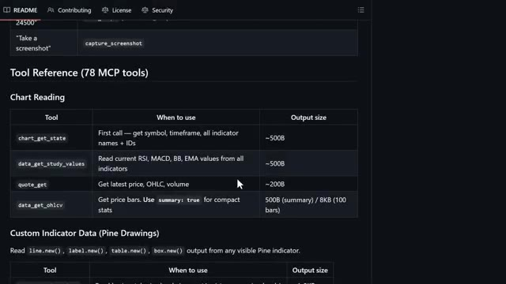
🔍 AgrandirPourquoi est-ce que j'ai besoin d'un cadre d'agent en plus ? Mais les données montrent quelque chose de différent. Un modèle de conversation répond quand vous demandez. Un cadre d'agent comme GrokBot fonctionne que vous demandiez ou non. Et le dernier élément, c'est le coût et la vitesse. L'équipe d'Elon vient de sortir Grok 4.6, qui est moins cher qu'Opus, mais qui atteint bon nombre des mêmes capacités.
Interface & Outils : Interface web d'agents conversationnels et tableau de bord de benchmarks de modèles d'IA.
Contenu textuel & Code : Liste d'agents IA autonomes et graphique statistique comparant "Table 5 Max" (62), "Grok 4.6" (61), "GPT-5.6 Sol Max" (61) et "Grok 4.5 High" (56).
Action / Démonstration : Navigation et sélection d'un agent dans le panneau latéral gauche, puis affichage des performances comparatives des modèles.
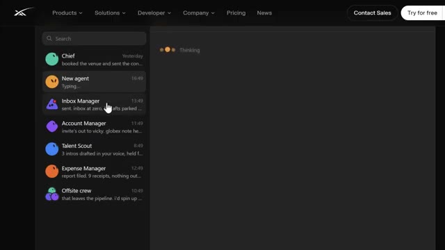
🔍 Agrandir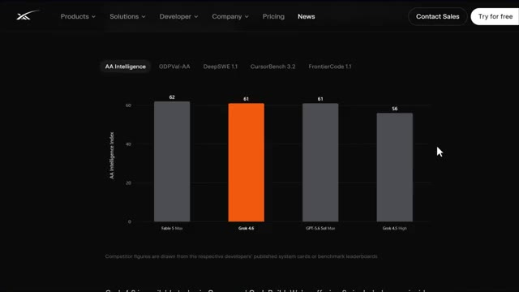
🔍 AgrandirDonc vous obtenez une intelligence de niveau pionnier sans avoir à faire tourner cinq abonnements en parallèle. C'est vraiment ça le fossé. Ce n'est pas que GrokBot soit plus intelligent que ChatGPT, Gemini ou Claude dans tous les cas. C'est qu'il est toujours actif. C'est du prêt-à-l'emploi et ça ne vous pénalise pas pour le fait de n'être pas un développeur. Bon, entrons maintenant dans le vif de la configuration, car je sais que beaucoup d'entre vous apprennent le mieux en voyant les choses étape par étape, exactement comme je le fais sur ma chaîne de tutoriels. Première étape, allez sur la page d'inscription de GrokBot. Vous pouvez vérifier le lien en bas dans la description. Vous allez
Interface & Outils : Interface de gestion de plugins et page web officielle de Grok Bot.
Contenu textuel & Code : Catalogue de plugins (Marketplace) et page d'accueil de présentation d'un agent IA.
Action / Démonstration : Navigation dans le store de plugins et présentation de l'application Grok Bot.
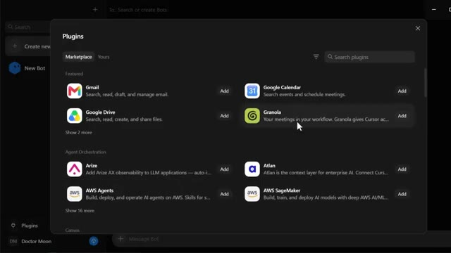
🔍 Agrandir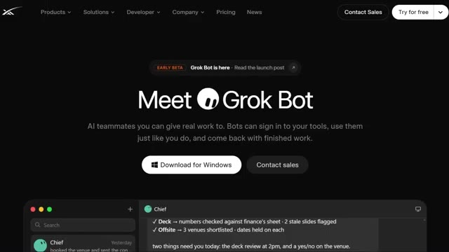
🔍 Agrandiramené sur cette page où vous pouvez voir que c'est en version bêta anticipée. Vous pouvez voir l'annonce de lancement ici. Lorsque vous faites défiler vers le bas, vous pouvez voir le bouton de téléchargement ici. Maintenant, cela dépend si vous avez un Mac ou Windows, mais pour ceci, nous allons utiliser Windows. Puisque c'est ce que nous utilisons,cliquez dessus et une fenêtre de téléchargement apparaîtra. Suivez simplement l'installation sur votre appareil, attendez quelques minutes, et vous êtes prêts. Une fois que vous ouvrez l'application, une fenêtre de connexion apparaîtra, cliquez dessus, et suivez les instructions. Vous pouvez activer votre essai gratuit ici. Une fois que c'est configuré, vous serez de retour sur le
Interface & Outils : Site web et application de bureau Grok Bot.
Contenu textuel & Code : Boutons de téléchargement, interface de chat d'agents IA et options de connexion.
Action / Démonstration : Navigation sur le site de téléchargement et sélection d'une option de lancement de l'application.
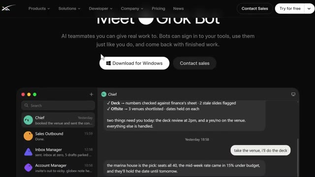
🔍 Agrandir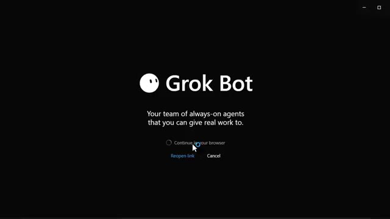
🔍 Agrandirapplication de bureau. Deuxième étape, une fois que vous arrivez sur votre tableau de bord, c'est votre centre de contrôle. C'est ici que vous allez lancer vos agents. Troisième étape, cliquez sur nouveau bot ou cliquez sur l'icône plus et attribuez-lui un rôle. Pour le trading de crypto, voici exactement ce que je configurerais. Un agent scanner de marché. Chaque matin, il vérifie votre liste de surveillance, signale toute pièce qui sort de sa plage normale et vous envoie un résumé avant même que vous n'ouvriez vos graphiques. Un agent de portefeuille. Avec ce bot, vous pouvez le connecter à votre échange, qu'il s'agisse de votre tableur avec des appels d'API en direct ou d'un direct
Interface & Outils : Application de bureau (Interface de gestion de bots)
Contenu textuel & Code : Panneau latéral gauche avec la liste des bots (recherche, 'New Bot', Plugins, Doctor Moon) et une zone de saisie centrale 'Message New Bot'.
Action / Démonstration : Navigation et sélection de 'New Bot' dans l'interface de l'application pour configurer un agent.
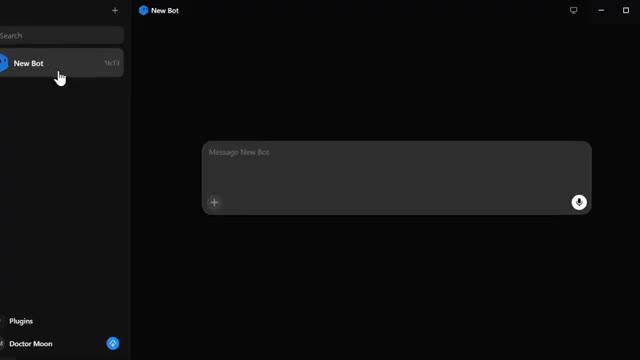
🔍 Agrandirlecture de la connexion à votre compte. Et chaque matin, il vous donne un récapitulatif de la nuit. Qu'est-ce qui a bougé ? Qu'est-ce qui est au calendrier aujourd'hui ? Et si un élément de vos positions nécessite de l'attention. Un agent de recherche, où vous pouvez le configurer pour analyser les actualités crypto et X toutes les quelques heures et compiler uniquement ce qui est réellement pertinent pour les pièces que vous détenez ou surveillez. Quatrième étape, sous l'onglet plugins, vous pouvez le connecter à Google Sheets, Gmail, Slack et d'autres outils. De la même manière que vous connectez un MCP dans Claude. C'est là que ça devient puissant pour le trading en particulier, car vous pouvez littéralement
Interface & Outils : Interface de chat d'agents conversationnels (type application de productivité / trading assistant)
Contenu textuel & Code : Panneau de configuration du bot "Portfolio Agent" avec titre "Overnight Portfolio & Position Recap" et description de connexion aux comptes d'échange, ainsi qu'une liste de plugins (Intercom, Plain, Amplitude, Antimetal, Apify, Astronomer, Mobbin).
Action / Démonstration : Navigation dans les paramètres de configuration du bot de portfolio et affichage du catalogue de plugins disponibles pour les agents.
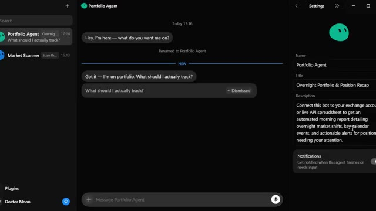
🔍 Agrandir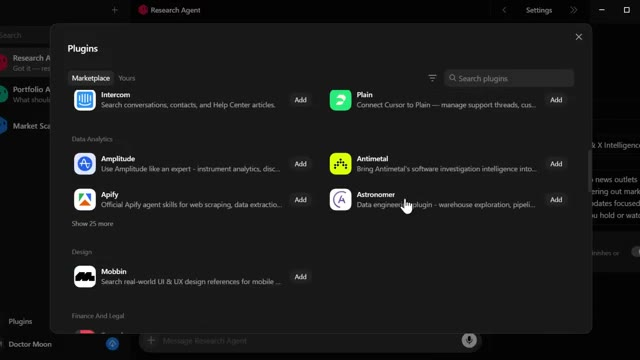
🔍 Agrandirdonnez-lui un accès en lecture à vos données d'échange et faites-le vous faire un rapport comme le ferait un analyste. Note importante, et je le dis à chaque fois que je parle d'automatisation et d'argent, lorsqu'il s'agit de l'exécution réelle des transactions, soyez beaucoup plus prudent. Les rapports et l'analyse, aucun problème. Le laisser placer de vrais trades en votre nom est une autre discussion et quelque chose que vous devez examiner attentivement avant de le connecter.
Interface & Outils : Application de type agent d'IA ou chatbot avec panneau de configuration (Market Scanner).
Contenu textuel & Code : Description de l'agent : "Every morning, this automated system scans your personal watchlist, flags any coin experiencing unusual price movement beyond its typical range, and delivers a concise summary directly to you before you even open your charts."
Action / Démonstration : Configuration et présentation des paramètres de l'agent de scan automatisé des marchés.
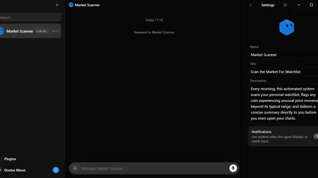
🔍 AgrandirMaintenant, laissez-moi vous montrer exactement comment j'utiliserais cela pour le trading et l'investissement, parce que c'est là que ça devient réellement utile et pas seulement un gadget sympa. 1. Récapitulatif du marché nocturne. Au lieu de vous réveiller et de faire défiler 15 onglets, vous ouvrez un seul chat et il vous dit ce que le Bitcoin et l'Ethereum ont fait pendant la nuit, s'il y a eu des chasses à la liquidité, et si les pièces de votre liste de surveillance ont déclenché des alertes.
Interface & Outils : Application de type chat IA / assistant virtuel (avec barre latérale listant différents agents : Research Agent, Portfolio Agent, Market Scanner).
Contenu textuel & Code : Prompt utilisateur affiché à l'écran demandant d'agir comme un assistant de briefing matinal crypto pour scanner l'action des prix nocturne (Bitcoin/Ethereum), les événements clés du marché et les alertes de la watchlist, afin d'éviter d'ouvrir de multiples onglets.
Action / Démonstration : Présentation de la configuration d'un agent IA automatisé pour la génération d'un récapitulatif du marché nocturne.
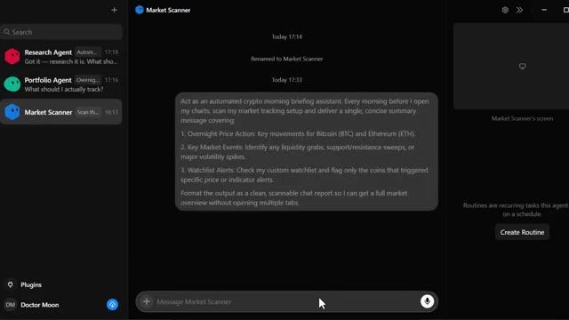
🔍 Agrandir2. Instructions de rééquilibrage de portefeuille. Si vous êtes comme beaucoup de traders qui oublient de rééquilibrer, vous pouvez littéralement dire : Signalez-moi si une position s'écarte de plus de 10 % de l'allocation cible, et il vous dira exactement quand et de combien. Trois, la recherche de valeurs aberrantes. De la même manière que j'utilise ce concept sur ma chaîne d'analyse technique.
Interface & Outils : Application de type chat avec agent IA pour la gestion et le rééquilibrage de portefeuille.
Contenu textuel & Code : Instructions détaillées de l'utilisateur pour le suivi des allocations, l'identification des dérives (>10%) et les détails de rééquilibrage.
Action / Démonstration : Configuration et instruction d'un agent IA pour automatiser le suivi et l'alerte de rééquilibrage du portefeuille.
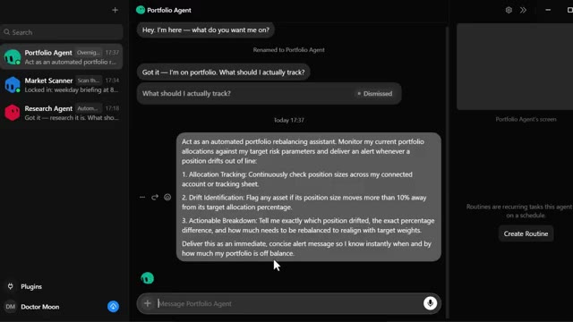
🔍 Agrandir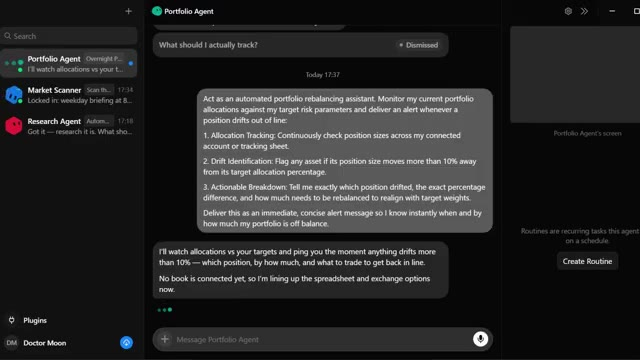
🔍 AgrandirTu peux le faire scanner à la recherche de pièces montrant un volume inhabituel ou brisant une structure clé. Ainsi, tu ne vérifies pas manuellement les graphiques toute la journée. Quatrièmement, la recherche de parrainages et de projets. Si tu gères une page ou une chaîne crypto comme je le fais, tu peux littéralement lui faire scanner quels projets dépensent le plus en publicité en ce moment.
Interface & Outils : Interface de type messagerie/agent IA (Market Scanner et Research Agent) avec panneaux de configuration des routines.
Contenu textuel & Code : Prompts de configuration pour l'analyse technique automatisée et liste de prospects publicitaires (Polymarket, Toobit, MEXC, Kraken, Injective).
Action / Démonstration : Démonstration de l'automatisation des tâches de scan de marché et de recherche de partenariats commerciaux.
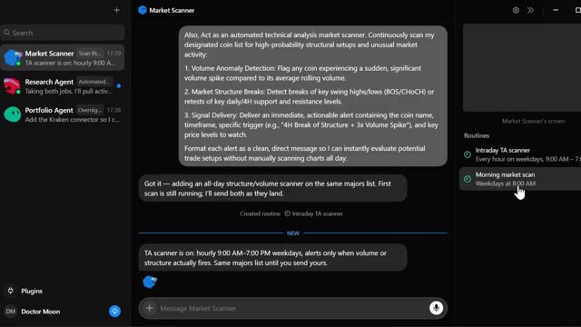
🔍 Agrandir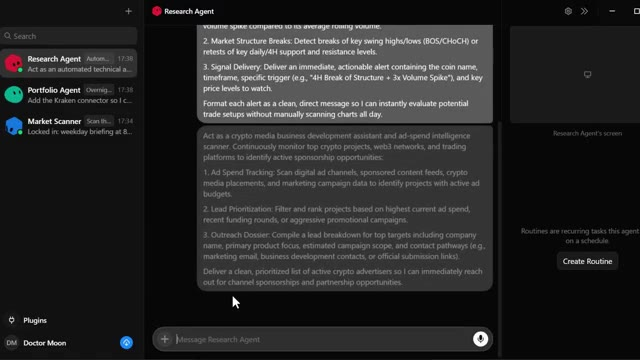
🔍 Agrandir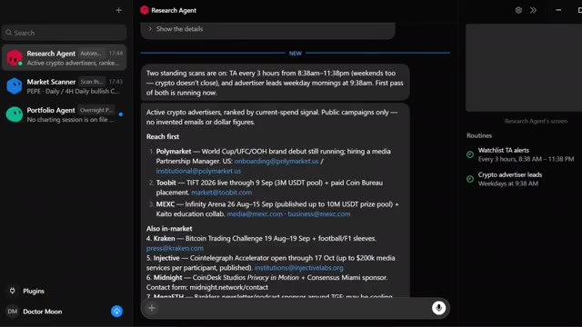
🔍 AgrandirComme ça, vous savez qui contacter. Cinq, formation à l'apprentissage et aux flux de travail. Vous pouvez vous enregistrer en train d'effectuer votre propre processus d'analyse technique, et il apprendra réellement à en répliquer des parties pour vous avec le temps. Mais voici le point important. GrokBot n'est pas seulement conçu pour le trading de crypto. Si vous avez d'autres tâches pour gérer votre entreprise ou votre vie, GrokBot peut aussi s'en charger. Vous pouvez le configurer pour la vente, la prospection, le recrutement de talents, la gestion des médias payants, la gestion des dépenses, le suivi des performances des produits, la reproduction de bugs, la surveillance de la santé des comptes, et même pour un rôle complet de chef de cabinet, GrokBot peut vraiment
Interface & Outils : Application de gestion de portefeuille et site web officiel de présentation des bots (Grok Bot).
Contenu textuel & Code : Texte de prompt détaillant l'extraction de processus d'analyse technique, la codification de règles et la réplication de stratégies ; descriptions des fonctionnalités des bots.
Action / Démonstration : Navigation sur l'interface du bot et présentation des capacités d'apprentissage des workflows et de gestion automatisée.
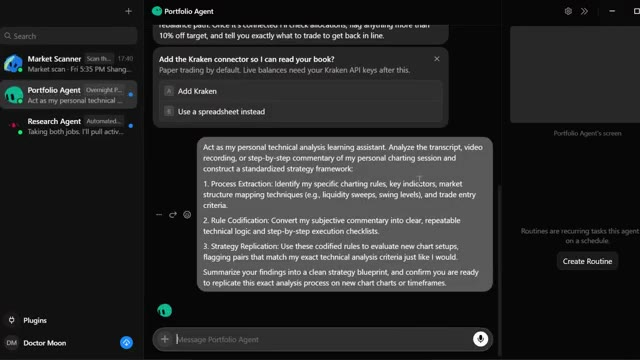
🔍 Agrandir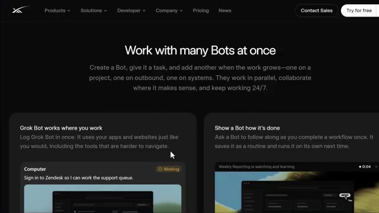
🔍 Agrandir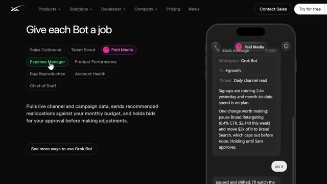
🔍 Agrandirtout faire. Les cas d'usage de la crypto sont juste là où je pointe en ce moment parce que c'est ce qui est pertinent pour vous et moi. Très bien, parlons des prix parce que je sais que c'est là que beaucoup d'entre vous vont avoir des avis. Cursor Ultra coûte 200 dollars par mois, facturé mensuellement. Cela inclut le propre ordinateur de GrokBot. Il se connecte à vos outils, exécute des routines selon un calendrier, fonctionne partout sur ordinateur, mobile, et plus encore, et vous donne des limites étendues sur les jetons AE. Supergirl Heavy coûte 300 dollars par mois, facturé mensuellement, et c'est tout ce qu'il y a dans Supergirl plus l'utilisation la plus élevée à la vitesse la plus rapide,
Interface & Outils : Site web de tarification et de présentation des abonnements (interface SaaS).
Contenu textuel & Code : Tarifs des abonnements : Cursor Ultra (200 $/mois), SuperGrok Heavy (300 $/mois) et Cursor Premium Teams (120 $/siège/mois), avec la liste des fonctionnalités incluses pour chaque offre.
Action / Démonstration : Navigation sur la page des prix et présentation des différentes offres d'abonnement pour l'outil IA.
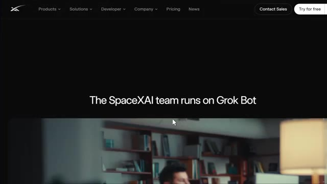
🔍 Agrandir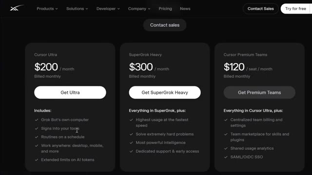
🔍 Agrandirla capacité de résoudre des problèmes extrêmement difficiles, l'intelligence la plus puissante, et un support dédié en accès anticipé. Cursor Premium Teams coûte 120 dollars par utilisateur et par mois, facturé mensuellement, et cela inclut tout ce qui est dans Cursor Ultra plus la création d'équipes et les paramètres centralisés, un marché d'équipe pour les compétences et les modules d'extension, des analyses d'utilisation partagées, et le protocole SAML ou O-I-D-C-S-S-O.
Interface & Outils : Page web de tarification (Pricing) avec interface sombre et cartes de forfaits.
Contenu textuel & Code : Tarifs affichés ($200/month, $300/month, $120/seat/month) et listes des fonctionnalités incluses pour chaque offre.
Action / Démonstration : Présentation et comparaison des différentes options d'abonnement et de leurs tarifs respectifs.
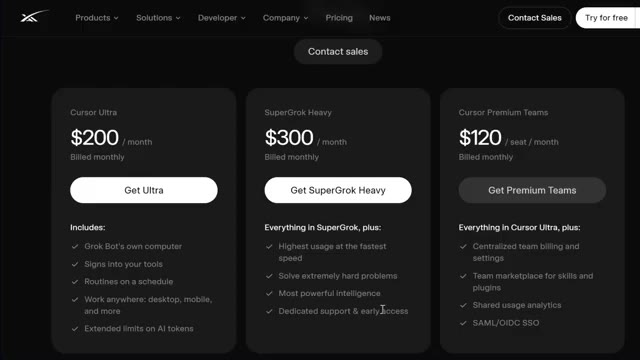
🔍 AgrandirMaintenant, comparez la tarification à d'autres modèles comme ChatGPT, Google Gemini et Claude d'Anthropic. ChatGPT Plus coûte 20 dollars par mois, ce qui vous donne l'expérience standard à laquelle la plupart des gens sont habitués. Mais si vous voulez leur modèle de raisonnement haut de gamme, ChatGPT Pro coûte 200 dollars par mois. Donc, rien que là, vous payez la même chose que pour le niveau supérieur de GrokBot, mais vous obtenez toujours seulement une conversation, et non un agent toujours actif doté de son propre ordinateur.
Interface & Outils : Interface web de tarification ChatGPT et articles ou blogs comparatifs.
Contenu textuel & Code : Grille tarifaire détaillée affichant les prix par mois (0$, 8$, 20$, 100$, 200$) et les fonctionnalités associées à chaque formule (limites d'utilisation, modèles avancés).
Action / Démonstration : Présentation visuelle et comparaison des différentes options de tarification des modèles d'intelligence artificielle à l'écran.
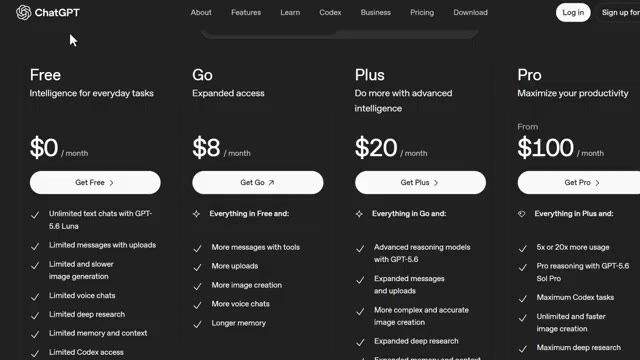
🔍 Agrandir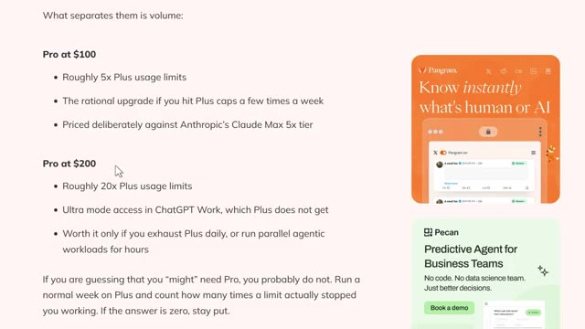
🔍 AgrandirGemini est similaire. Google AI Pro, qui s'appelait autrefois Gemini Advance, coûte 19,99 $ par mois pour la formule standard. Mais si vous voulez leur formule ultra dotée des capacités maximales, cela passe à 99,99 $ par mois. Et il y a une formule encore plus élevée à 199,99 $ par mois. Encore une fois, c'est une vraie somme d'argent pour un modèle qui ne fonctionne toujours que lorsque vous le sollicitez activement. Et Claude max cinq fois coûte 100 $ par mois et max 20 fois, leur formule la plus élevée est à 200 $ par mois. Vous payez donc le prix de GrokBot pour Claude
Interface & Outils : Navigateur web affichant les pages de tarification officielles de Gemini et Claude.
Contenu textuel & Code : Tableaux comparatifs des prix et fonctionnalités des abonnements d'IA (tarifs mensuels en dollars, limites d'utilisation, fonctionnalités avancées).
Action / Démonstration : Présentation comparative des grilles tarifaires des différentes offres d'intelligence artificielle.
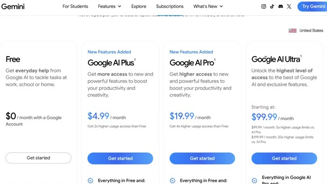
🔍 Agrandir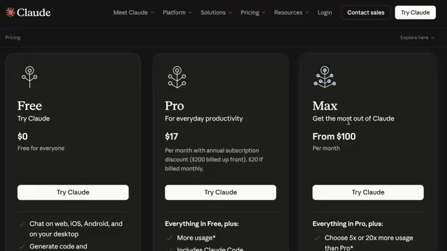
🔍 Agrandirintelligence, sauf qu'il faut encore la surveiller, ouvrir le chat et entretenir soi-même la conversation. Donc, quand on met tout bout à bout, 20 à 300 dollars pour ChatGPT, 20 à 200 dollars pour Gemini, 100 à 200 dollars pour Claude, vous dépensez déjà de vraies sommes pour les abonnements supérieurs de n'importe lequel d'entre eux. La différence avec GrokBot à cette même tranche de prix de 200 à 300 dollars, c'est que vous ne payez pas pour une conversation plus intelligente.
Interface & Outils : Pages de tarification (pricing pages) de sites web d'IA (Claude, Gemini, xAI/Cursor).
Contenu textuel & Code : Grilles de tarifs d'abonnements IA affichant des montants de 0$ à 300$ par mois et des fonctionnalités associées.
Action / Démonstration : Présentation et comparaison des coûts mensuels des différents abonnements d'intelligence artificielle.
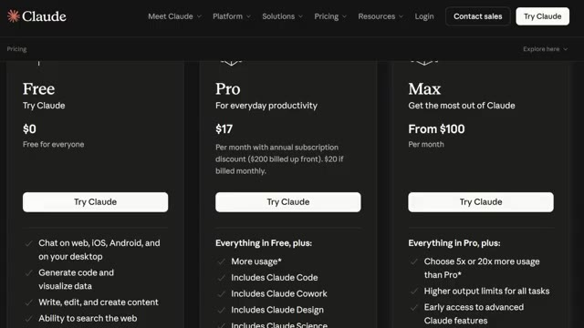
🔍 Agrandir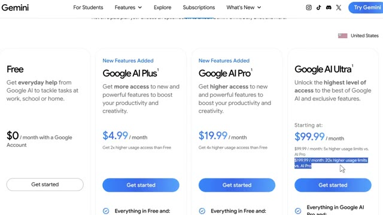
🔍 AgrandirVous payez pour quelque chose qui fonctionne 24h/24 et 7j/7 sans vous. Écoutez, 200 dollars, c'est beaucoup, et je ne vais pas faire semblant que ce n'est pas le cas. Ce n'est pas pour quelqu'un qui se lance tout juste dans la crypto avec un abonnement de 20 dollars. C'est pour les personnes qui dépensent déjà de l'argent réel en crédits API ou en abonnements multiples à des IA et qui veulent que tout soit regroupé en un seul système toujours actif. Si ce n'est pas encore votre cas, il n'y a aucun problème. Vous pouvez tirer énormément de valeur des outils gratuits et trader intelligemment quand même.
Interface & Outils : Page web de tarification logicielle (style SaaS / xAI / Cursor).
Contenu textuel & Code : Tarifs affichés : Cursor Ultra à 200 $ / mois, SuperGrok Heavy à 300 $ / mois, et Cursor Premium Teams à 120 $ / seat / mois. Liste des fonctionnalités incluses pour chaque offre.
Action / Démonstration : Présentation des différentes formules d'abonnement et de leurs coûts mensuels correspondants.
Maintenant, avant de conclure, laissez-moi passer en revue une FAQ rapide parce que je sais que beaucoup d'entre vous vont se poser exactement ces questions dans les commentaires. En quoi GrokBot est-il différent des assistants IA ? Les bots ont leur propre ordinateur, donc ils peuvent travailler à l'intérieur de vos applications et de vos outils. Ils fonctionnent également en parallèle, 24 heures sur 24 et 7 jours sur 7, même lorsque votre ordinateur portable est fermé. Pour qui GrokBot est-il disponible aujourd'hui ? GrokBot est accessible aujourd'hui pour les abonnés de Cursor Ultra, Super Grok Heavy et Cursor Premium Team. GrokBot est-il disponible pour les entreprises ? Bientôt. Nous prévoyons d'ouvrir GrokBot aux équipes et aux entreprises
Interface & Outils : Page web de FAQ (thème sombre)
Contenu textuel & Code : Texte de la FAQ : 'How is Grok Bot different from AI assistants? Bots have their own computer, so they can work inside your apps and tools. They also run in parallel, 24/7, even when your laptop is closed.' ainsi que d'autres questions fréquentes.
Action / Démonstration : Présentation des questions de la FAQ concernant Grok Bot.
dans les semaines à venir. Pour l'instant, vous pouvez vous inscrire sur liste d'attente. Je mettrai le lien ci-dessous. Où est-ce que je parle à GrokBot ? Travailler avec GrokBot depuis votre bureau, macOS ou Windows, ou votre téléphone avec l'application iOS ? Est-ce que les bots partagent un seul ordinateur ? Oui. Chaque Grokbot partage un seul ordinateur cloud persistant. Vos bots partagent cette machine, les fichiers, le navigateur, les identifiants, afin de pouvoir se passer le relais et conserver le contexte.
Interface & Outils : Page web FAQ avec design minimaliste sombre.
Contenu textuel & Code : Questions fréquentes (« FAQs »), notamment : « How is Grok Bot different from AI assistants? », « Who is Grok Bot available for today? », « Is Grok Bot available for enterprises? » avec le texte explicatif « Soon. We expect to open Grok Bot to teams and enterprises in the coming weeks. For now, you can join our waitlist here. »
Action / Démonstration : Navigation sur la page web pour illustrer la disponibilité prochaine de Grok Bot et l'accès à la liste d'attente.
L'isolement est par utilisateur, et non par Grokbot. Comment Grokbot gère-t-il mes données et ma vie privée ? Grokbot utilise le même SSO, la même authentification et le même mode de confidentialité de Cursor auxquels vous faites déjà confiance. Votre ordinateur cloud est chiffré en transit et au repos avec une option de désactivation de l'entraînement. Les actions sensibles peuvent passer par une révision automatique avant d'être exécutées. Les administrateurs d'entreprise peuvent définir la prévention des pertes de données, les certificats, les proxys et les contrôles réseau au démarrage.
Interface & Outils : Site web / Page de FAQ de Grok Bot.
Contenu textuel & Code : Section FAQ déployée affichant le texte sur la sécurité, l'authentification SSO, le chiffrement et le mode de confidentialité de Cursor.
Action / Démonstration : Lecture de la FAQ concernant la confidentialité des données et la sécurité du cloud computer.
Très bien, et écoutez, au cours des prochaines années, deux types de traders existeront : ceux qui utilisent l'IA et ceux qui font encore tout manuellement. Même marché. Des résultats très différents. Voici comment vous mettre du bon côté de tout cela. J'ai rassemblé tout ce qui se trouve à l'intérieur de la communauté AI Trade Edge. Chaque prompt, chaque bot, chaque modèle, chaque guide étape par étape que j'utilise personnellement, tout en un seul endroit, et tout ce que je construirai à l'avenir sera ajouté directement dans le groupe dès sa sortie. Nous testons également des stratégies provenant de partout sur Internet, en les automatisant
Interface & Outils : Interface web de la plateforme d'apprentissage Alex Carter Trading et interface du réseau social X.
Contenu textuel & Code : Liste des capacités d'automatisation et de lecture de graphiques via l'IA (lecture OHLCV, indicateurs techniques, contrôle des symboles et des unités de temps).
Action / Démonstration : Présentation des avantages compétitifs de l'IA dans le trading et démonstration des fonctionnalités de la plateforme logicielle.
en utilisant PineScript, en les exécutant en direct, et en partageant exactement ce qui fonctionne et ce qui ne fonctionne pas. Donc vous n'obtenez pas seulement des outils. Vous obtenez une opération de recherche en direct. À l'intérieur, il y a aussi un cours complet de trading agentique. 2,5 heures. Du débutant à l'expert. Aucune compétence en codage requise. D'ici la fin, vous aurez votre propre système de trading par IA fonctionnant en direct. Quelque chose que la plupart des traders particuliers ne savent même pas être possible en ce moment. 79,99 $ par mois. Un bon trade couvre ce montant. Et les 100 premiers membres bloquent ce tarif de façon permanente. Après cela, le prix augmente. Le lien est dans la
Interface & Outils : TradingView, interface de cours en ligne, plateforme Whop
Contenu textuel & Code : Graphique Bitcoin/USD, indicateur RSI-VWAP, modules de cours (OpenClaw, Agentic Bots, Python Bot, Deploy to Hostinger VPS, Live-Ops Dashboard)
Action / Démonstration : Analyse technique d'un graphique de cryptomonnaie et présentation du programme de formation en trading agentique.
description. Vous ne pouvez vraiment pas vous permettre de rater ça. Donc ça c'est GrokBot. Ce que c'est, pourquoi je pense qu'il bat actuellement les alternatives pour un travail en continu, exactement comment le configurer, et comment vous pouvez le pointer directement vers votre trading et vos investissements de cryptos. Je vais continuer à tester ceci au cours des prochaines semaines et voir comment il tient le coup face aux conditions réelles du marché. Alors assurez-vous d'être abonnés et d'avoir activé les notifications car je partagerai des mises à jour au fur et à mesure. Et si vous voulez le guide complet étape par étape sur la façon de construire votre propre système de trading agentique en utilisant Claude, cette vidéo est
Interface & Outils : Interface d'agent conversationnel IA (style interface de chat avec panneau latéral de gestion des bots).
Contenu textuel & Code : Analyses techniques de cryptomonnaies incluant des alertes de volume, des cassures de structure (BOS), des changements de caractère (CHoCH), et des prix cibles.
Action / Démonstration : Présentation de l'interface des bots de trading et affichage des résultats d'analyses automatisées en temps réel.
qui s'affiche également à l'écran. Allez voir ça ensuite. Si vous avez trouvé cela utile, laissez un pouce bleu. Cela aide vraiment la chaîne. Abonnez-vous si ce n'est pas déjà fait, et je vous dis à la prochaine.
Interface & Outils : Aucune
Contenu textuel & Code : Aucun
Action / Démonstration : Aucune